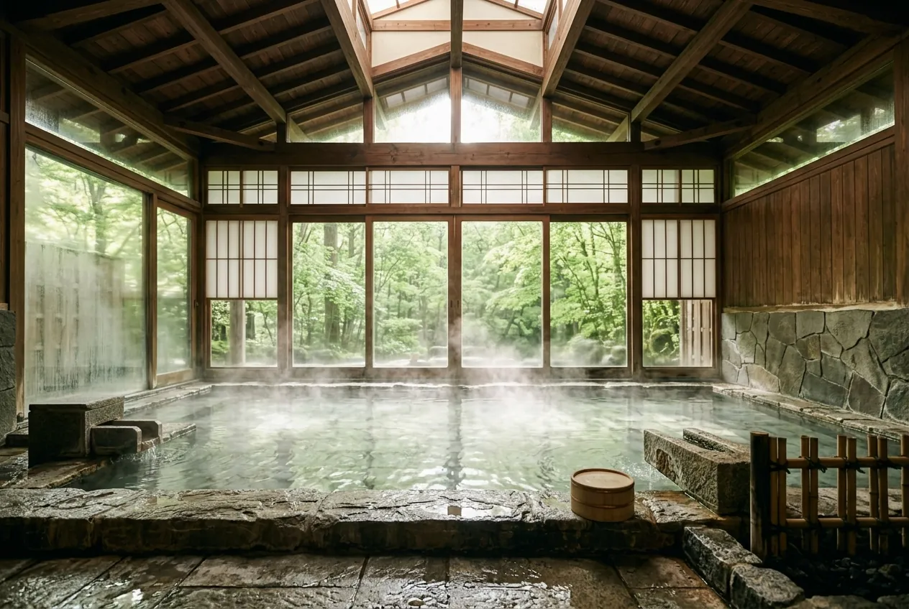
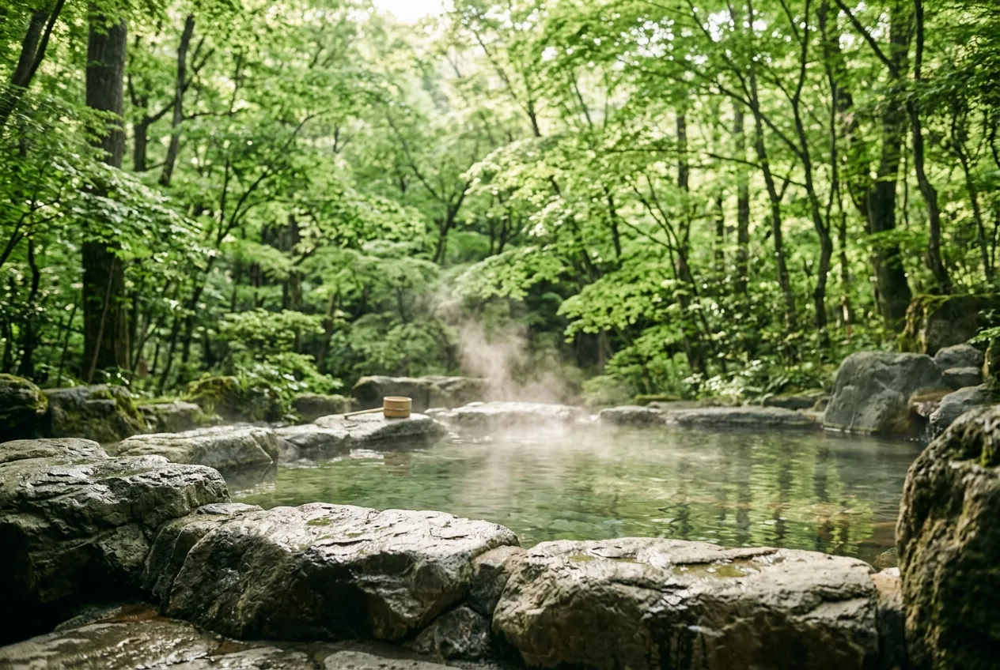
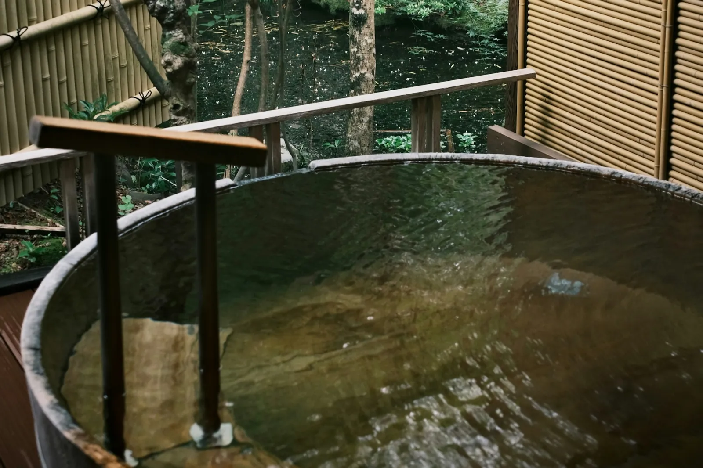

大浴場
男女入れ替え制
高い木の天井と、大きな石の湯船。窓の外の緑を眺めながら、足をのばしてお入りください。
- 時間
- 15:00〜24:00／5:30〜10:00

お湯は、町の真ん中にある湯畑の源泉から引いています。
少し白くにごった、ぴりっと肌にしみる、草津らしい強い酸性の湯です。
男女入れ替え制
高い木の天井と、大きな石の湯船。窓の外の緑を眺めながら、足をのばしてお入りください。

大浴場から続いています
森に面した岩の露天風呂。朝は鳥の声、夜は湯けむりの向こうに星が見えます。

1回50分・無料
竹垣に囲まれた、木の桶のお風呂。ご家族や、お二人だけでゆっくり入りたいときに。
お入りになる前に
酸性が強いため、長く入るとのぼせたり、肌がひりひりしたりすることがあります。1回10分ほどを目安に、上がるときは真水のシャワーで流してください。銀のアクセサリーは色が変わることがあるので、外してお入りください。
※ 泉質の数値は、湯畑源泉の一般的な値です（このサイトは架空の宿の見本です）。